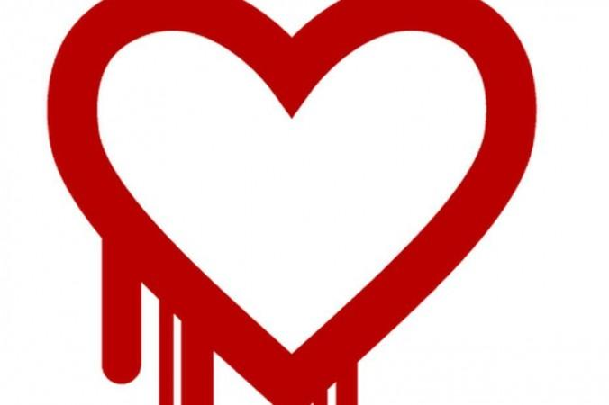
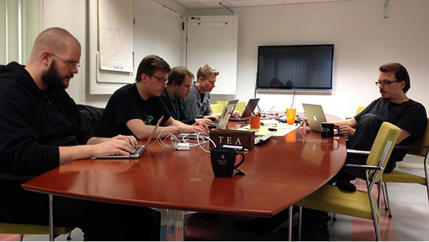

HeartBleed è il più pericoloso bug di OpenSSL
che sia mai stato scoperto: le ultime indiscrezioni parlano del coinvolgimento di Barack Obama, che avrebbe autorizzato la NSA a sfruttarlo per accedere ai dati di milioni d’utenti del web in tutto il mondo per ordire quello che, grazie alle dichiarazioni di Edward Snowden, è stato definito Datagate. La realtà potrebbe essere molto lontana da questa sorta di teoria del complotto, perché Heartbleed è “soltanto” un errore umano nell’aggiornamento della libreria commesso due anni fa.
Sappiamo già che Heartbleed è stato trovato da Neel Mehta di Google e Codenomicon, che collabora con Mountain View 
nella realizzazione di soluzioni per la sicurezza informatica. Se l’apertura della falla è stata una svista, la sua scoperta non ha nulla di casuale: un debug di routine per Chrome e SafeGuard ha permesso che due gruppi diversi di ricercatori scoprissero il bug in marzo. Ciò mi riporta a sostenere l’importanza del debugging dalle app ai siti web che avrebbe potuto contenere subito i problemi dovuti a Heartbleed.
La notizia di tale bug pur essendo emersa nel 2014, era stata già scoperta dalla NSA nel 2012, la quale avrebbe sfruttato tale falla per controllare criminali e terroristi.
Oltre alle comunicazioni software anche la veicolazione hardware può aver subito l'influenza di tale vulnerabilità, in particolar modo i router, alcuni produttori hanno dichiarato come alcuni hardware di loro produzione siano affetti da questo problema e che potrebbe essere necessario la loro sostituzione.
Intanto OpenSSL ha reso immediatamente disponibile la versione aggiornata (la 1.0.1g ) che chiude la falla. Quindi è doveroso che tutte le aziende che forniscono servizi aggiornino la libreria, o che ricompilino quella in uso eliminando la parte che ha causato la falla. E’ necessario, poi, sostituire il certificato digitale. Quello in uso potrebbe essere compromesso perché la chiave privata potrebbe essere stata sottratta.
E’ consigliabile anche un reset delle sessioni attive, che in sostanza “slogga” gli utenti loggati.
Infine, sarebbe opportuno suggerire agli utenti di cambiare password. Rispetto al cambio delle password, molte aziende lo hanno richiesto. E rimane comunque una buona prassi periodica. I colossi californiani, però, se pur finiti nella falla dell’OpenSSL non hanno dato alcun suggerimento ai loro utenti. Forse sarebbe stato sinonimo di debolezza, e avrebbe scatenato il panico. Ma se fosse stato realmente necessario non lo sapremo mai.